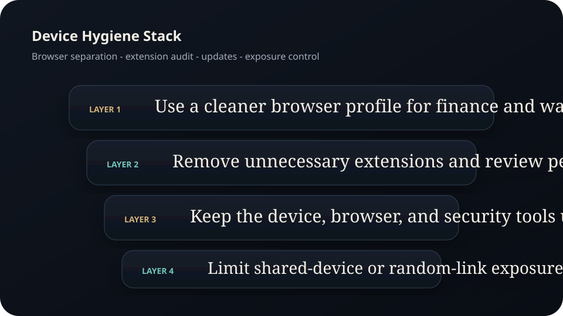
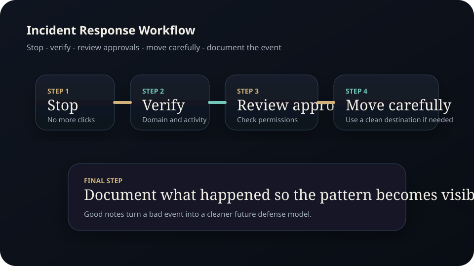

Full Edition
Risk and Safety Handbook.
A full beginner edition on fraud patterns, domain discipline, wallet protection, approval review, device hygiene, and calm incident response when something feels wrong.
Disclaimer Page
Important educational and legal notice
Good safety practice reduces risk, but it does not eliminate it. This handbook is educational only and is not a substitute for professional advice or official support.
- Madeesh P. Nissanka is not a financial advisor, security consultant, legal adviser, or licensed support professional.
- This material does not guarantee safety, recovery of funds, successful fraud prevention, or profit.
- Wallets, exchanges, apps, and networks can all carry technical and human risk.
- Readers must independently verify official domains, support channels, and transaction prompts before acting.
- No reader should ever share a Secret Recovery Phrase, private key, or sensitive authentication code with another person.
- If funds, credentials, or devices may be compromised, readers should seek appropriate official and professional assistance.
Contents
Full chapter map
The focus is operational protection, not fear marketing.
Fraud patterns
Guaranteed-return language, urgency, and fake authority.
Domain discipline
Official links, lookalikes, and support impersonation.
Wallet safety
Recovery phrase handling, burner wallets, and separation.
Approval awareness
Why contract permissions matter even after the transaction ends.
Device hygiene
Extensions, browser separation, updates, and exposure control.
Incident response
What to do when something feels compromised.
Chapter 1
Fraud usually starts with language before it reaches your wallet
CFTC and SEC fraud alerts warn about high guaranteed returns, low-risk promises, and complicated language that makes an offer hard to understand. Those signs matter because the scam often begins long before any transaction is signed. It begins when the victim is trained to suspend skepticism.
If the pitch relies on urgency, secrecy, or certainty, slow down. If the reward is framed as easy and the explanation is strangely hard to understand, slow down even more.
Chapter 2
Domain discipline prevents many avoidable losses
Users often land on malicious sites because they click links in direct messages, replies, or lookalike search ads. The safe path is to start from a known official source, store the verified domain, and compare it carefully before logging in or connecting a wallet.
- Open official links from saved bookmarks or verified documentation.
- Check the full domain, not just the page design or logo.
- Treat surprise support outreach as suspicious by default.
- When in doubt, disconnect first and verify through the official help center.
Chapter 3
Wallet safety begins with the recovery model
MetaMask's safety messaging is direct: never share the Secret Recovery Phrase. That message is foundational because the recovery phrase or private key is effectively the root credential for the wallet. If another person acquires it, the wallet is no longer yours.
Separation also matters. A burner wallet for experimentation is different from a storage wallet that should rarely interact with unfamiliar applications.
Chapter 4
Approvals can outlive the moment that created them
Many users think risk only exists when they actively send funds. In reality, token approvals can remain in place after the original interaction. If the contract is malicious or later compromised, those permissions can become part of the attack path.
- Read approval prompts with the same caution as send prompts.
- Use separate wallets for higher-risk experimentation.
- Review stale approvals periodically.
- Do not normalize signing prompts you do not fully understand.
Chapter 5
Device hygiene lowers risk by reducing accidental exposure
Wallet risk is not only about blockchain behavior. It is also about the browser, device, extensions, saved sessions, and software upkeep surrounding the wallet. A cleaner device environment reduces the number of ways a user can be tricked, intercepted, or confused.
Practical steps include reviewing installed extensions, keeping software updated, and avoiding unnecessary wallet use on shared or poorly controlled devices.

Figure B. Domain discipline should be a fixed operating path, not an improvised guess under pressure.

Figure C. Browser separation, extension review, and updates reduce the number of ways confusion turns into exposure.
Chapter 6
Incident response should be calm, structured, and documented
When something feels compromised, panic creates secondary mistakes. The first move is to stop interacting. The second is to identify what happened: a bad link, a suspicious approval, a compromised account, or a fake support interaction. Only then should the user decide on the next containment step.
- Stop using the affected workflow immediately.
- Review recent approvals, sites, and transaction history.
- If necessary, move remaining assets carefully to a clean destination wallet.
- Document the incident so the same pattern becomes easier to recognize next time.

Figure A. A calm response sequence reduces the chance of a second mistake during a bad event.
Research Notes
Source foundation and further reading
External facts were paraphrased and checked against official or public-interest sources available at drafting time. Before public launch, re-check support guidance, wallet tooling, and reporting paths against the current official documentation.
Publication Note
End of full edition
This manual is published as part of the Madeesh P. Nissanka educational library and is intended as a practical guide for operational defense and safer market participation.
Educational only. Not financial advice.
Madeesh P. Nissanka